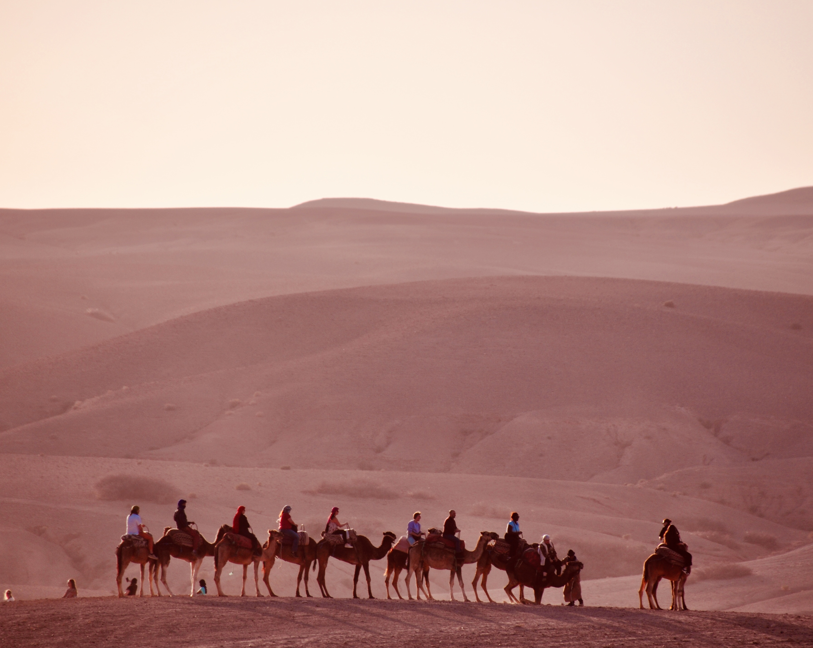
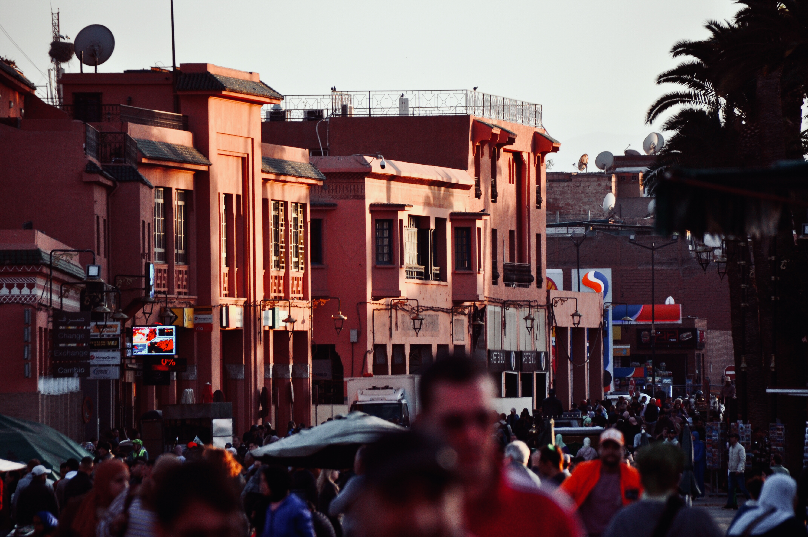
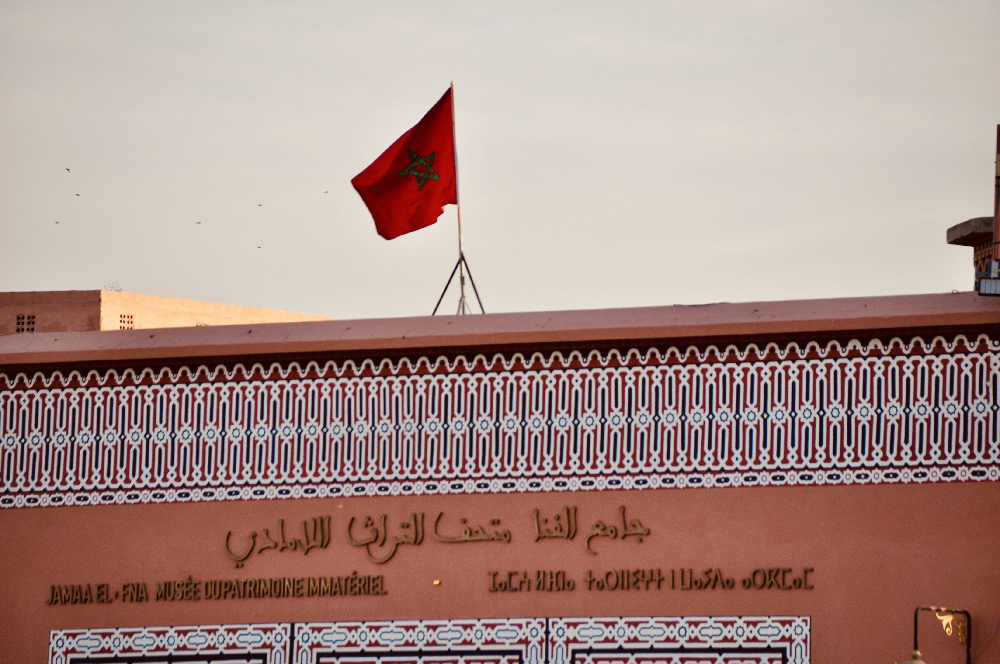
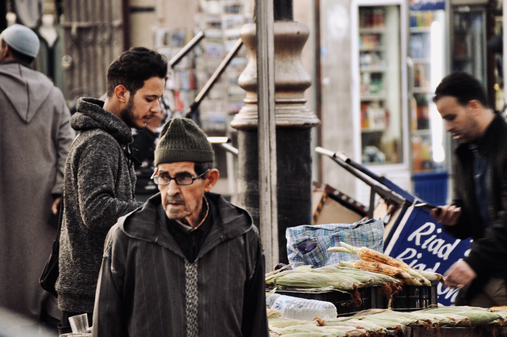
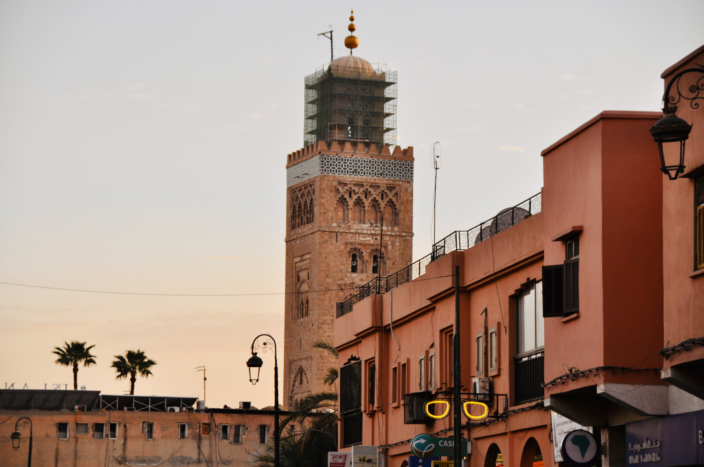
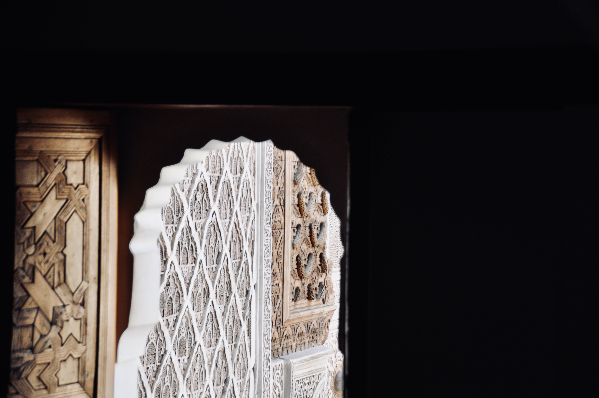

Recent Photos

Camels at Agafay, Morocco
Camels on the hills of the Agafay Desert

Jemaa el-Fna Square at Sunset
The hub of attractions in Marrakesh, the Jemaa el-Fna Square, gets very crowded at sunset.

Façade of the Madrasa Ben Youssef
The beautiful facade of the 16th-century college building, Madrasa Ben Youssef.

The Musée du Patrimoine Immatériel
The Flag of Morocco flying high at sunset near the Musée du Patrimoine Immatériel in Marrakesh.

Daily Life in Marrakesh
Locals in Marrakech setting up their food stands for the start of the day.

The 12th Century Koutoubia
The damaged Koutoubia mosque at sunset with repairs due to the earthquake.

Engravings from the 16th century
The intricate details and shapes inside the Madrasa Ben Youssef in Marrakesh.